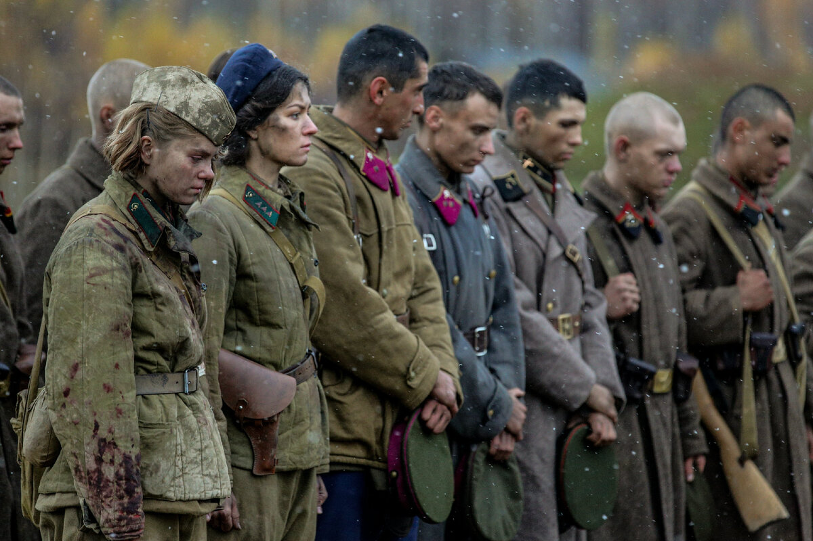
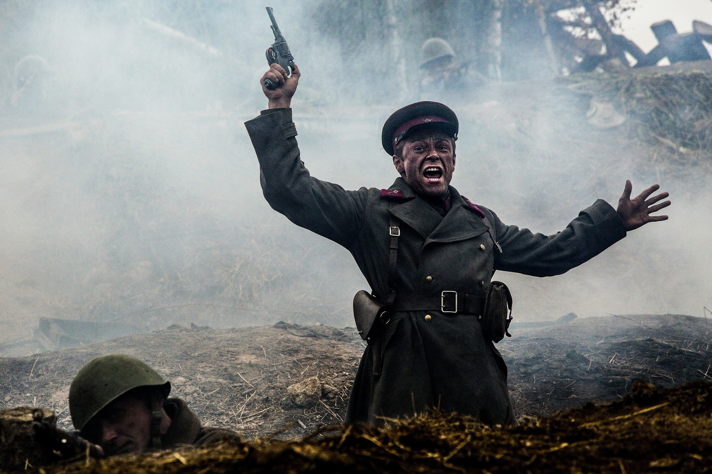
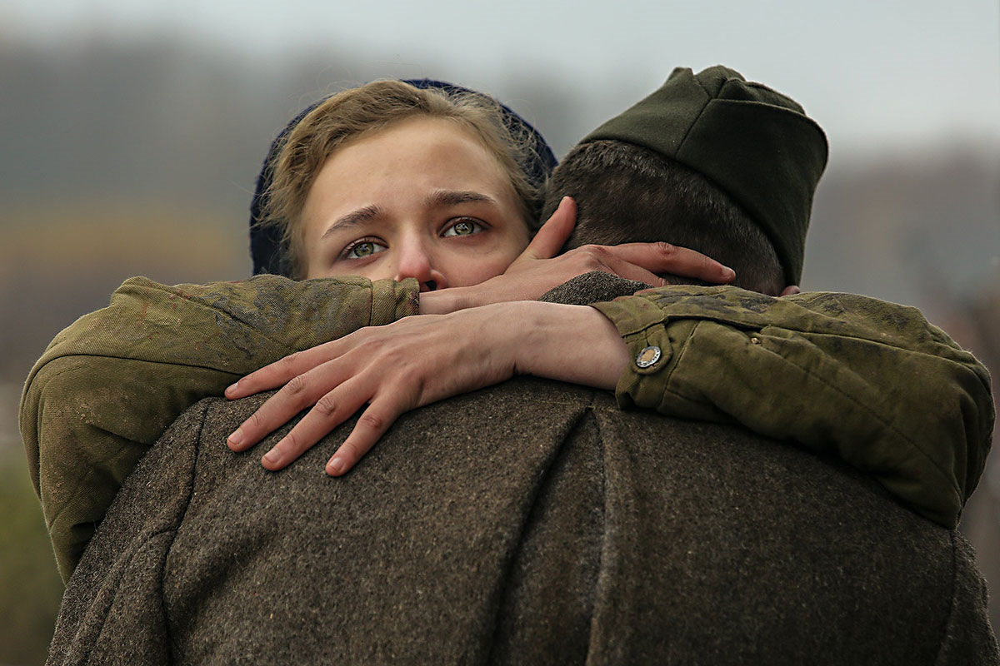
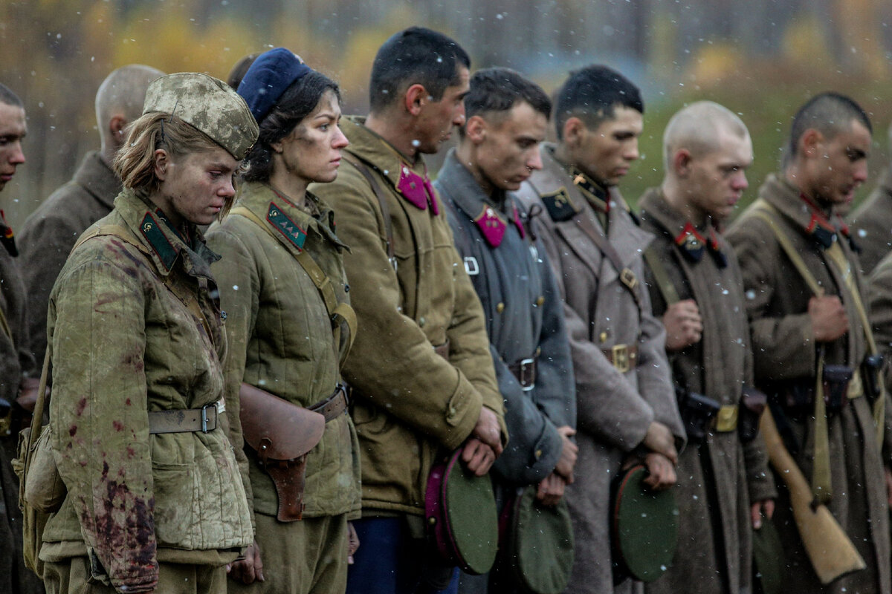
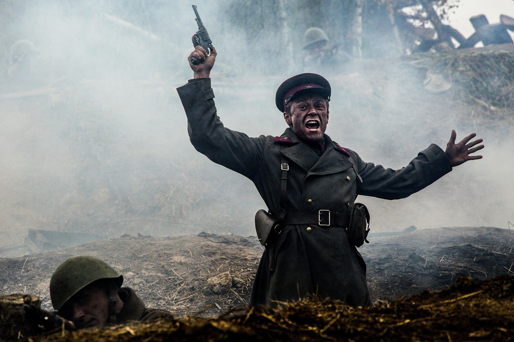
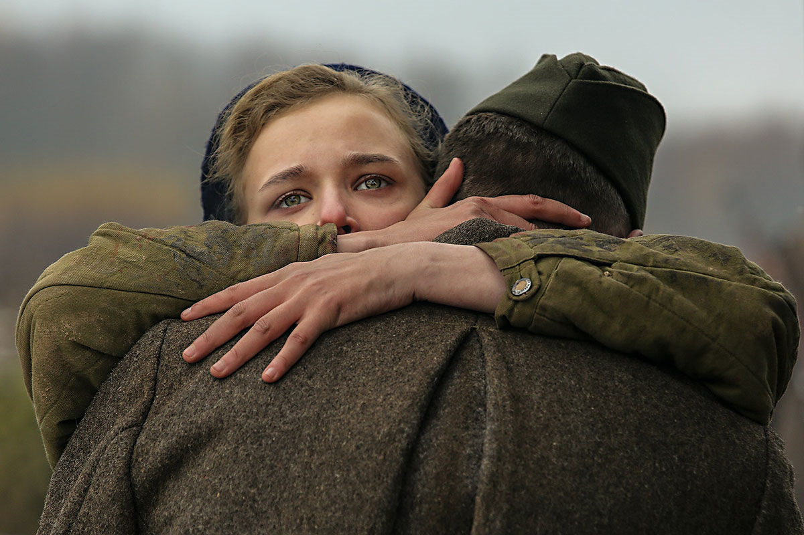

Фильмы
Краткое описание:
Май 1942 года. В самый разгар Великой Отечественной войны вдалеке от линии фронта у забытого богом разъезда
немцы выбрасывают десант с целью пробраться на Кировскую железную дорогу и Беломорско-Балтийский канал.
Это не обычные солдаты-пехотинцы, а опытные тренированные диверсанты, элита войск СС. А против них —
старшина Васков и пять девчонок-зенитчиц. Казалось бы, бой местного значения, но на кону — стратегически
важная транспортная aртерия, соединяющая значимые центры страны. Смогут ли старшина и его хрупкие новобранцы
предотвратить нацистскую диверсию, и какой ценой?
 




Краткое описание:
Осень 1941 года. В подольских училищах проходят основательную подготовку будущие командиры Красной Армии.
Большинству еще нет и двадцати лет: они учатся, дружат, влюбляются, строят планы, но когда поступает
неожиданный приказ выдвигаться на передовую, они идут – на смерть и бессмертие. Немцы прорываются к
Москве: необходимо мобилизовать все силы, лишь бы задержать противника на пять-шесть дней до подхода
резервов Ставки. Вместо этого защитникам Ильинского рубежа удается продержаться 12 дней. После неравных
боев из трех с половиной тысяч курсанто возвращается менее тысячи. За свою короткую юность главные герои
успевают пережить первую любовь, испытать на прочность мужскую дружбу и спасти Москву, не подпустив к ней врага.
Краткое описание:
Жизнь харизматичного авантюриста, капитана Джека Воробья, полная увлекательных приключений, резко меняется,
когда его заклятый враг капитан Барбосса похищает корабль Джека Черную Жемчужину, а затем нападает на Порт
Ройал и крадет прекрасную дочь губернатора Элизабет Свонн.
Друг детства Элизабет Уилл Тернер вместе с Джеком
возглавляет спасательную экспедицию на самом быстром корабле Британии, чтобы вызволить девушку и заодно
отобрать у злодея Черную Жемчужину. Вслед за этой парочкой отправляется амбициозный коммодор Норрингтон,
который к тому же числится женихом Элизабет.
Однако Уилл не знает, что над Барбоссой висит вечное проклятие,
при лунном свете превращающее его с командой в живых скелетов. Проклятье будет снято лишь тогда, когда
украденное золото Ацтеков будет возвращено пиратами на старое место.